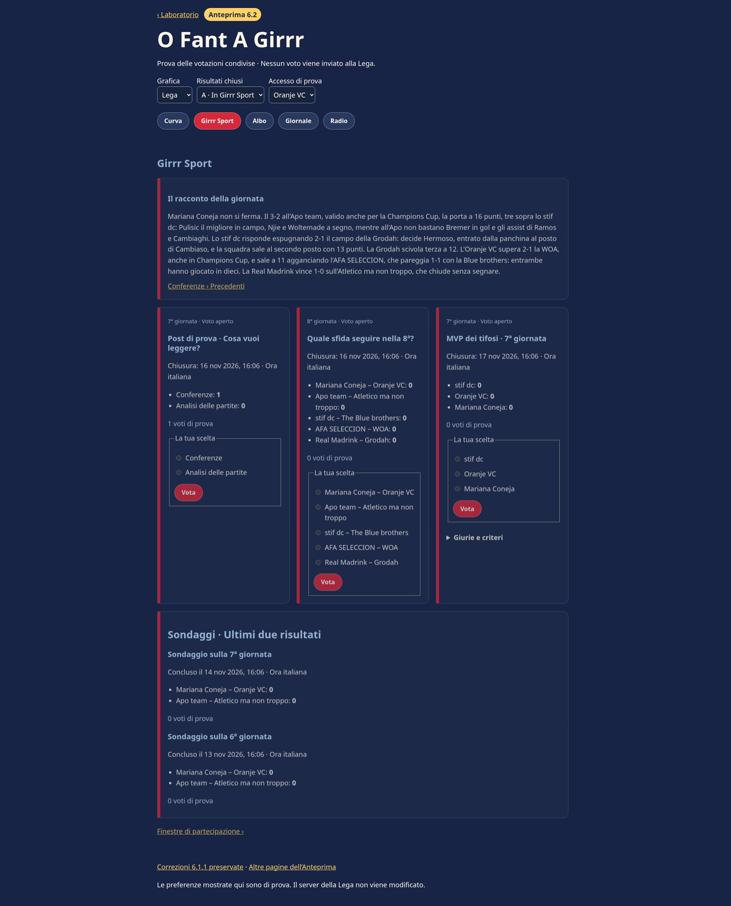
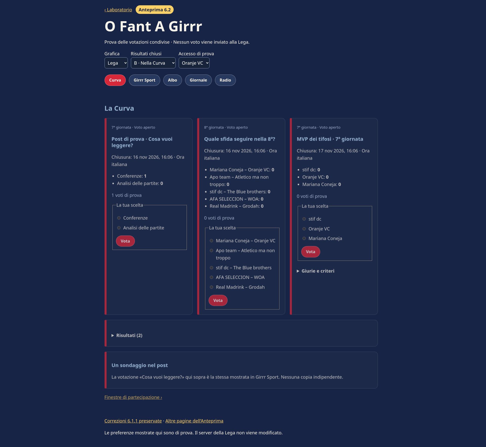
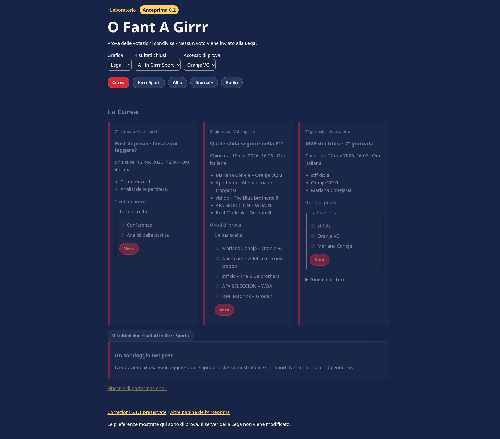
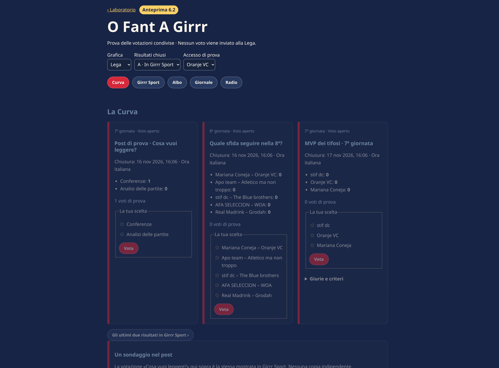
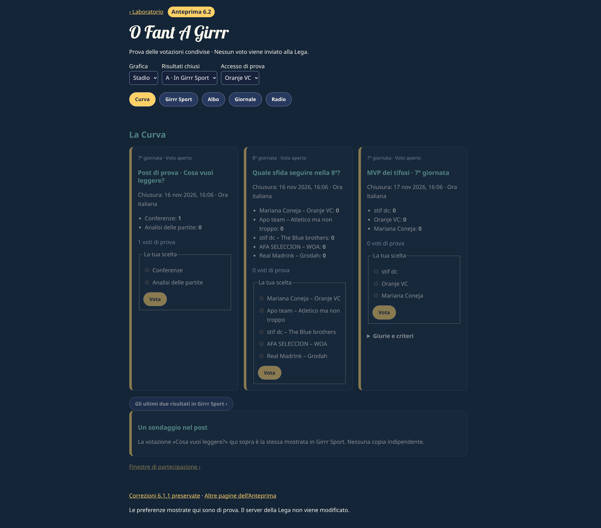

A · Risultati in Girrr Sport
Gli ultimi due sondaggi chiusi in una sezione dedicata. Dalla Curva, un richiamo compatto.
Proposta non approvata da Gianluca. Pubblicazione ferma. Le immagini e il PDF sotto sono solo documentazione della bozza rifiutata, non la grafica finale.
Curva e Girrr Sport condividono il voto. Due collocazioni dei risultati da confrontare, con il sondaggio aperto e l’MVP sempre utilizzabili nella Curva.
In prova · Voti dimostrativi, nessuna scrittura alla Lega
Gli ultimi due sondaggi chiusi in una sezione dedicata. Dalla Curva, un richiamo compatto.
Un pulsante compatto, chiuso quando entri. Soltanto due risultati, senza elenco completo e senza riquadri duplicati.
Squadra e giornata a scelta. Le risposte disponibili sono quelle lette dalla Sala stampa; dove mancano, «Dato non conservato».
Apri Precedenti ›Il premio dei tifosi rimane distinto dal miglior punteggio statistico. I verdetti compaiono soltanto dopo la chiusura definitiva.
Apri l’Albo ›Il voto della 7ª giornata è ancora aperto. Scadenza già annunciata conservata: 21 novembre, ore 15:00 italiane. Caratteri conservati, nessuna riduzione automatica.
Apri il PDF reale di prova ›Segue il saluto integrale di Beppe. Anteprima solo testuale, con la nuova battuta evidenziata.
Apri il copione ›Entrambe le alternative A e B restano visibili. Finestre approvate per le future aperture; scadenze già annunciate ferme. Nel Giornale: un commento reale pertinente, quando disponibile, senza attribuzioni inventate.
Le cinque finestre ›

A · Foto Stadio · B · Foto Stadio


